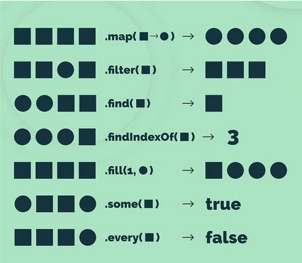
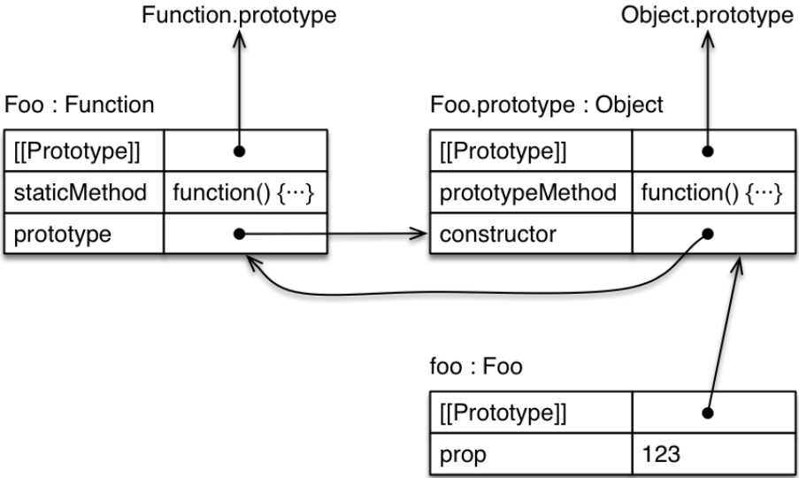

Arrays Objetos y clases#
Arrays#
Los arrays en JavaScript son una estructura de datos utilizada para almacenar múltiples valores en una sola variable. Los arrays se definen utilizando corchetes [] y los elementos se separan por comas. A diferencia de otros lenguajes como C o Java, no es necesario definir la longitud del array al declararlo. Además, los arrays pueden contener posiciones vacías (empty), y es posible acceder a sus elementos de manera similar a otros lenguajes, utilizando índices. Por ejemplo:
let a = [];
a[0] = 1;
Un array en JavaScript puede contener cualquier tipo de dato, incluyendo otros arrays, objetos o funciones. Esto le otorga una gran flexibilidad. Además, los arrays son objetos en JavaScript y se pueden construir usando el constructor new:
var cars = new Array("Saab", "Volvo", "BMW");
Métodos y Propiedades de los Arrays#
Los arrays en JavaScript tienen varias propiedades y métodos interesantes que facilitan su manipulación. Entre otros:
length: Devuelve el número de elementos en el array.
sort(): Ordena los elementos del array.
push(): Agrega uno o más elementos al final del array.
pop(): Elimina y retorna el último elemento del array.
Ejemplo de uso:
(()=>{
let a = [1, 2, 3];
console.log(a.length); // 3
a.sort();
a.push(4); // [1, 2, 3, 4]
a.pop(); // [1, 2, 3]
a
})()
3
Recorrer Arrays#
Para iterar sobre los elementos de un array, JavaScript ofrece varias opciones:
for loop:
for (let i = 0; i < a.length; i++) {
console.log(a[i]);
}
for…of loop:
for (let i of a) {
console.log(i);
}
forEach:
a.forEach(i => console.log(i));
map (aunque en este caso,
forEaches más adecuado para solo imprimir):
a.map(i => console.log(i));
La mejor manera de recorrer los arrays depende de la necesidad. En el primer caso, la sintaxis típica de C, creamos una variable de control del bucle que puede ser útil dentro del bucle. Si es necesaria esa variable o queremos alterar las iteraciones en función de esa variable, puede ser la mejor opción. El caso de for..of es uno de los más sencillos, ya que no necesitamos la variable de control y sigue siendo ámbito de bloque. Esta sería la mejor opción en casi todos los casos en los que necesitamos recorrer un array completamente y en órden. forEach es como el anterior, pero en este caso creamos una función de callback. Una ventaja es que esta función también acepta el índice y el array. Puede ser útil en programación funcional cuando tenemos una función que ejecutar para cada elemento. El problema es que tiene ámbito de función y podemos tener problemas con el this si no usamos correctamente las funciones flecha. El map solo se debería usar para retornar una copia modificada del array, como veremos más adelante.
Búsqueda en Arrays#
JavaScript proporciona métodos útiles para buscar elementos en un array:
includes(): Comprueba si un array contiene un determinado elemento.
find(): Retorna el primer elemento que cumple con la condición dada.
findIndex(): Devuelve el índice del primer elemento que cumple con la condición dada.
indexOf(): Devuelve el primer índice en el que se puede encontrar un elemento.
filter(): Crea un nuevo array con todos los elementos que cumplen la condición.
Ejemplo:
const alligator = ["thick scales", 80, "4 foot tail", "rounded snout"];
console.log(alligator.includes("thick scales")); // true
console.log(alligator.find(el => el.length < 12)); // '4 foot tail'
console.log(alligator.find((el, idx) => typeof el === "string" && idx === 2)); // '4 foot tail'
console.log(alligator.indexOf("rounded snout")); // 3
console.log(alligator.findIndex(el => el == "rounded snout")); // 3
console.log(alligator.filter(el => el === 80)); // [80]
true
4 foot tail
4 foot tail
3
3
[ 80 ]
Otras Operaciones en Arrays#
Existen varios métodos adicionales para manipular arrays en JavaScript:
splice(): Permite eliminar elementos o agregar nuevos a partir de una posición específica (modifica el array).
slice(): Extrae una porción del array sin modificarlo, retorna un nuevo array.
flat(): Convierte un array multidimensional en un array de menos dimensiones.
flatMap(): Aplica una función a cada elemento y aplana una dimensión del array.
join(): Transforma un array en una cadena.
split(): Transforma una cadena en un array.
fill(): Llena un array con un valor específico.

Ejemplo de uso:
let array = [1, 2, 3, 4, 5];
// splice
array.splice(2, 1); // Elimina un elemento desde la posición 2
console.log(array); // [1, 2, 4, 5]
// slice
let newArray = array.slice(1, 3);
console.log(newArray); // [2, 4]
// flat
let multiArray = [1, [2, [3, 4]]];
console.log(multiArray.flat(2)); // [1, 2, 3, 4]
// flatMap
let mapArray = [1, 2, 3];
console.log(mapArray.flatMap(x => [x, x * 2])); // [1, 2, 2, 4, 3, 6]
// join
console.log(array.join('-')); // "1-2-4-5"
// split
let str = "Hello World";
let strArray = str.split(' ');
console.log(strArray); // ["Hello", "World"]
// fill
array.fill(0, 1, 3); // Llena con 0 desde la posición 1 hasta la 3
console.log(array); // [1, 0, 0, 5]
// delete
delete array[3]; // Deja un empty
console.log(array); // [1, 0, 0, empty]
[ 1, 2, 4, 5 ]
[ 2, 4 ]
[ 1, 2, 3, 4 ]
[ 1, 2, 2, 4, 3, 6 ]
1-2-4-5
[ "Hello", "World" ]
[ 1, 0, 0, 5 ]
[ 1, 0, 0, <1 empty item> ]
Mutabilidad de los arrays#
En Javascript, los arrays son mutables. Esto quiere decir que se puede alterar su contenido. No siempre nos interesa mutar un array cuando queremos obtener un resultado de él.
Métodos que mutan el array#
Array.prototype.copyWithin()Array.prototype.fill()Array.prototype.pop()Array.prototype.push()Array.prototype.reverse()Array.prototype.shift()Array.prototype.sort()Array.prototype.splice()Array.prototype.unshift()
Métodos que no mutan el array#
Array.prototype.concat()Array.prototype.includes()Array.prototype.indexOf()Array.prototype.join()Array.prototype.keys()Array.prototype.lastIndexOf()Array.prototype.map()Array.prototype.reduce()Array.prototype.reduceRight()Array.prototype.slice()Array.prototype.some()Array.prototype.toLocaleString()Array.prototype.toString()Array.prototype.values()Array.prototype.every()Array.prototype.filter()Array.prototype.find()Array.prototype.findIndex()Array.prototype.flat()Array.prototype.flatMap()Array.prototype.forEach()Array.prototype.entries()Alternativas modernas no mutables:
Array.prototype.toSorted()Array.prototype.toReverse()Array.prototype.toSpliced()
En esta tabla se muestran algunos métodos que mutan con una alternativa. En algunos casos, la alternativa puede ser hacer una copia con [...array] sobre la que aplicar el método:
Método que muta el array |
Método que no muta el array |
|---|---|
|
|
|
|
|
|
|
|
|
|
|
|
|
|
|
|
|
|
Objetos en JavaScript#
JavaScript siempre ha soportado objetos, aunque no de la manera tradicional de las clases como en otros lenguajes orientados a objetos. Un objeto en JavaScript es similar a un array, pero en lugar de estar indexado por números, está indexado por nombres (similar a un array asociativo en PHP o un diccionario en Python). Los objetos permiten almacenar colecciones de datos y funcionalidades relacionadas.
Se puede acceder a los atributos de un objeto utilizando la notación de punto . o corchetes [].
let persona = {
nombre: ['Bob', 'Smith'],
edad: 32,
genero: 'masculino',
intereses: ['música', 'esquí'],
bio: function () {
alert(this.nombre[0] + ' ' + this.nombre[1] + ' tiene ' + this.edad + ' años. Le gusta ' + this.intereses[0] + ' y ' + this.intereses[1] + '.');
}
};
En este ejemplo, persona es un objeto con varias propiedades: nombre, edad, genero, intereses y bio. La propiedad bio es una función (método) que puede acceder a otras propiedades del objeto usando this.
Iterar sobre las Propiedades de un Objeto#
Para recorrer las propiedades de un objeto, se puede utilizar el bucle for...in.
let user = {
name: "John",
age: 30,
isAdmin: true
};
for (let key in user) {
// keys
alert(key); // name, age, isAdmin
// values for the keys
alert(user[key]); // John, 30, true
}
En este ejemplo, el bucle for...in recorre todas las propiedades del objeto user, mostrando tanto las claves (keys) como los valores asociados a esas claves.
Además, se puede comprobar si una propiedad existe en un objeto utilizando el operador in.
let user = { name: "John", age: 30 };
alert("age" in user); // true, user.age exists
alert("blabla" in user); // false, user.blabla doesn't exist
Objetos Predefinidos en JavaScript#
Antes de entrar en más detalle sobre los objetos, vamos a repasar objetos predefinidos en Javascript que tenemos disponibles.
String#
El objeto String tiene varias funciones importantes:
toLowerCase(): Convierte una cadena a minúsculas.
concat(): Concatena dos o más cadenas.
charAt(): Devuelve el carácter en el índice especificado.
indexOf(text, [index]): Devuelve el índice de la primera aparición del texto.
lastIndexOf(text, [index]): Devuelve el índice de la última aparición del texto.
replace(text1, text2): Reemplaza text1 con text2 en la cadena.
split(caracter, [trozos]): Separa la cadena por un carácter separador, retorna un array. Si se define trozos, indica la cantidad máxima de trozos.
substring(inicio, [fin]): Devuelve la subcadena dada un principio y un posible fin.
Date#
El objeto Date se utiliza para trabajar con fechas y horas.
// Crea una fecha con la fecha y hora del sistema
var d = new Date();
// Crea una fecha con una cadena
d = new Date("October 13, 2014 11:13:00");
// Crea una fecha con año, mes, día, hora, minutos, segundos, milisegundos
d = new Date(99, 5, 24, 11, 33, 30, 0);
// Crea una fecha con año, mes y día
d = new Date(99, 5, 24);
Funciones importantes del objeto Date:
setMonth(mes), getMonth()
setDate(dia), getDate()
setHours(hora, minut, segundo), getHours(), etc.
getDay(): Devuelve el día de la semana (0 al 6).
toDateString(): Convierte la fecha a una cadena.
toGMTString(): Convierte la fecha a una cadena en formato GMT.
toUTCString(): Convierte la fecha a una cadena en formato UTC.
Array#
El objeto Array tiene varios métodos interesantes:
join([separador]): Crea una cadena con los elementos del array utilizando un separador.
push(element, element2,…): Añade elementos al final.
pop(): Elimina el último elemento.
reverse(): Invierte el array.
sort(): Ordena alfabéticamente.
slice(inicio, [final]): Devuelve los elementos entre un inicio y un final.
Math#
El objeto Math contiene funciones útiles para operaciones matemáticas.
Constantes importantes:
E
PI
LN2 (logaritmo natural de 2)
LN10
LOG2E (logaritmo en base 2 de E)
LOG10E
Funciones de redondeo:
floor(): Redondea hacia abajo.
ceil(): Redondea hacia arriba.
round(): Redondea al entero más cercano.
Funciones matemáticas:
abs(): Valor absoluto.
max(x, y): Devuelve el mayor de los valores.
min(x, y): Devuelve el menor de los valores.
pow(x, y): Potencia de x elevado a y.
random(): Número aleatorio entre 0 y 1.
sqrt(): Raíz cuadrada.
Otros Objetos Predefinidos#
Nativos:
String
Number
Boolean
Date
RegExp
Array
Function
Object
De alto nivel (dependen del navegador):
Window
Screen
Navigator
Location
History
Document
Clases en JavaScript#
Antes de la introducción de ES6, las clases en JavaScript se creaban utilizando funciones constructoras. Esta técnica sigue siendo utilizada. Con ES6, se incorporó la palabra clave class, que se asemeja más a la sintaxis de otros lenguajes de programación orientados a objetos. Sin embargo, es importante entender que JavaScript no funciona exactamente con clases en el sentido tradicional, sino con prototipos.
JavaScript siempre ha tenido objetos, pero no clases de la forma tradicional que se encuentran en otros lenguajes como Java o C++. Las clases en ES6 no tienen atributos y métodos privados de manera directa; esto se maneja mediante closures. En las nuevas versiones ya se permite declarar atributos privados con #. En JavaScript, las clases son más una técnica de programación que una funcionalidad del lenguaje.
En este apartado vamos a ver lo que realmente son las clases, explicando cómo se crean con funciones constructoras, aunque sabemos que hoy en dia se puede usar class.
Creación de Objetos con Funciones Constructoras#
Una función constructora es una plantilla para crear nuevos objetos. Veamos un ejemplo:
(()=>{
function Apple(type) {
this.type = type;
this.color = "red";
this.getInfo = function() {
return this.color + ' ' + this.type + ' apple';
};
}
})();
En este ejemplo, hemos declarado una función constructora llamada Apple. Esta función toma un parámetro type y establece las propiedades type y color en el nuevo objeto. También define un método getInfo que retorna una cadena con la información del objeto.
Para crear una instancia de Apple, se utiliza el operador new:
(()=>{
function Apple(type) {
this.type = type;
this.color = "red";
this.getInfo = function() {
return this.color + ' ' + this.type + ' apple';
};
}
let myApple = new Apple("Granny Smith");
console.log(myApple.getInfo()); // "red Granny Smith apple"
})();
red Granny Smith apple
Al utilizar new, la función constructora Apple es invocada, creando un nuevo objeto con las propiedades y métodos definidos en la función.
Métodos en el Prototipo#
Para hacer el código más eficiente, es posible definir métodos en el prototipo de la función constructora en lugar de definirlos dentro de la propia función. Esto evita recrear la función cada vez que se crea un nuevo objeto:
En este caso, getInfo se define en el prototipo de Apple. Esto significa que todas las instancias de Apple comparten la misma función getInfo, en lugar de tener su propia copia. Esto es más eficiente en términos de memoria y rendimiento.
(()=>{
function Apple(type) {
this.type = type;
this.color = "red";
}
Apple.prototype.getInfo = function() {
return this.color + ' ' + this.type + ' apple';
};
let myApple = new Apple("Granny Smith");
console.log(myApple.getInfo()); // "red Granny Smith apple"
})();
red Granny Smith apple
Objetos Literales#
Los objetos literales permiten crear objetos de manera más sencilla y directa. Veamos un ejemplo:
var apple = {
type: "macintosh",
color: "red",
getInfo: function() {
return this.color + ' ' + this.type + ' apple';
}
};
Este objeto apple se crea directamente con sus propiedades y métodos. A veces se le llama “singleton” porque es una única instancia de un objeto.
Para crear nuevas instancias a partir de un objeto literal, se puede utilizar Object.create():
var anotherApple = Object.create(apple);
console.log(anotherApple.getInfo()); // "red macintosh apple"
Sin embargo, no es recomendable usar objetos literales para crear múltiples instancias, ya que todas ellas serían instancias directas de
Object.
Singleton con una Función#
Un singleton se puede crear utilizando una función anónima invocada con new:
var apple = new function() {
this.type = "macintosh";
this.color = "red";
this.getInfo = function() {
return this.color + ' ' + this.type + ' apple';
};
};
El uso de new function() hace dos cosas: define una función anónima y la invoca inmediatamente con new, creando así un singleton. Este enfoque garantiza que solo haya una instancia del objeto.
Prototipos en JavaScript#
En JavaScript, todos los objetos tienen un prototipo. Un prototipo es también un objeto, y a su vez, tiene su propio prototipo. Este concepto crea una cadena de prototipos, conocida como prototype chain. A través de los prototipos, un objeto puede delegar propiedades y métodos a otros objetos, permitiendo la reutilización de código y la herencia.
Lectura recomendada:
La Cadena de Prototipos (Prototype Chain)#
Todos los objetos en JavaScript están conectados a un prototipo común llamado Object. Esto permite que los objetos hereden propiedades y métodos definidos en Object.prototype.
(()=>{
let homework = {
topic: "JS"
};
console.log(homework.toString()); // [object Object]
})()
[object Object]
En el ejemplo anterior, el objeto homework no tiene una propiedad o método toString. Sin embargo, JavaScript lo encuentra en Object.prototype, lo que permite llamar a homework.toString().
Vínculo de Objetos (Object Linkage)#
Se pueden crear nuevos objetos que hereden de otros objetos utilizando Object.create(). Esto permite crear una cadena de prototipos donde el objeto hijo puede acceder a las propiedades y métodos del objeto padre.
(()=>{
let homework = {
topic: "JS"
};
var otherHomework = Object.create(homework);
console.log(otherHomework.topic); // "JS"
})()
JS
En este ejemplo, otherHomework hereda la propiedad topic de homework a través de la cadena de prototipos.
Prototype en Objetos y Funciones#
Las funciones en JavaScript tienen una propiedad llamada .prototype, que es un objeto con una propiedad constructor (que apunta a la propia función) y un prototipo que es Object.
(()=>{
function Apple(type) {
this.type = type;
this.color = "red";
}
Apple.prototype.getInfo = function() {
return this.color + ' ' + this.type + ' apple';
};
let myApple = new Apple("Granny Smith");
console.log(myApple.getInfo()); // "red Granny Smith apple"
})()
red Granny Smith apple
Cuando se crea un nuevo objeto utilizando new Apple("Granny Smith"), este objeto hereda las propiedades y métodos definidos en Apple.prototype.
Los objetos creados con literales o con new no tienen una propiedad .prototype, pero se puede acceder a su prototipo utilizando Object.getPrototypeOf(objeto).
let obj = {};
console.log(Object.getPrototypeOf(obj));
[Object: null prototype] {}
Prototype en Objetos Predefinidos#
Es posible extender los prototipos de objetos predefinidos como String, Array, y Object añadiendo métodos adicionales. Esto permite que todos los objetos de ese tipo en la aplicación tengan acceso a los nuevos métodos. Sin embargo, esta práctica puede ser peligrosa en aplicaciones grandes o cuando se utilizan múltiples bibliotecas, ya que puede causar conflictos.
Por ejemplo, se puede añadir un método a Array.prototype:
Array.prototype.forEachLog = function() {
for (let i of this) {
console.log(i);
}
};
let a = [1, 2, 3, 4];
a.forEachLog();
// Output: 1 2 3 4
1
2
3
4
Aunque esta técnica puede ser útil, también puede llevar a problemas de compatibilidad y mantenimiento en aplicaciones complejas.
Una alternativa más segura es usar Object.defineProperty para definir métodos no enumerables, lo que evita que el método sea iterado en un bucle for...in:
Object.defineProperty(Array.prototype, 'forEachLog', {
value: function() {
for (let i of this) {
console.log(i);
}
},
enumerable: false
});
//Esto asegura que `forEachLog` no aparezca en iteraciones `for...in`:
let a = [1, 2, 3, 4];
a.forEachLog(); // Output: 1 2 3 4
for (let key in a) {
console.log(key); // Output: 0 1 2 3
}
1
2
3
4
0
1
2
3
Manipulación y Copia de Objetos en JavaScript#
Copia de Objetos#
En ES6, copiar objetos y arrays se puede realizar de manera sencilla utilizando el operador de propagación (spreading). Este operador permite crear copias superficiales de objetos y arrays.
Copia Superficial con Spreading#
//Para copiar un objeto, se usa el siguiente formato:
const originalObject = { a: 1, b: 2 };
const copyOfObject = { ...originalObject };
console.log(copyOfObject); // { a: 1, b: 2 }
//Para copiar un array, se usa el mismo operador:
const originalArray = [1, 2, 3];
const copyOfArray = [...originalArray];
console.log(copyOfArray); // [1, 2, 3]
{ a: 1, b: 2 }
[ 1, 2, 3 ]
Uso del Operador Rest#
El operador de propagación (...) también se puede utilizar como operador Rest, con la intención opuesta: recoger el resto de los elementos. Esto es útil tanto en objetos como en funciones.
(()=>{
const { a, ...rest } = { a: 1, b: 2, c: 3 };
console.log(a); // 1
console.log(rest); // { b: 2, c: 3 }
})()
1
{ b: 2, c: 3 }
Copia Superficial con Object.assign()#
Otra manera de copiar objetos es utilizando Object.assign(), que también crea una copia superficial del objeto.
const originalObject = { a: 1, b: 2 };
const copyOfObject = Object.assign({}, originalObject);
console.log(copyOfObject); // { a: 1, b: 2 }
{ a: 1, b: 2 }
Copia Profunda con structuredClone()#
https://developer.mozilla.org/en-US/docs/Web/API/structuredClone
Para realizar una copia profunda, donde todas las referencias anidadas también se copian, se puede usar structuredClone():
const originalObject = { a: 1, b: { c: 2 } };
const copyOfObject = structuredClone(originalObject);
console.log(copyOfObject); // { a: 1, b: { c: 2 } }
{ a: 1, b: { c: 2 } }
La copia profunda funciona para atributos y objetos normales, pero no para métodos y nodos del DOM. Tampoco mantiene la “prototype chain”.
Desestructuración de Objetos#
La desestructuración es una característica que permite extraer propiedades de objetos y asignarlas a variables.
Desestructuración Básica de Objetos#
const o = { p: 42, q: true, a: { r: 20, s: 'abc' } };
const { p, q } = o;
console.log(p, q); // 42 true
42 true
Desestructuración con Nuevos Nombres#
Se pueden asignar nuevos nombres a las variables extraídas:
const { p: foo, q: bar } = o;
console.log(foo, bar); // 42 true
42 true
Desestructuración de Objetos Anidados#
También se pueden desestructurar objetos anidados y cambiar el nombre de las variables:
(()=>{
const { a } = o;
const { a: { r: R } } = o;
console.log(a, R); // { r: 20, s: 'abc' } 20
})()
{ r: 20, s: "abc" } 20
Desestructuración de Arrays#
La desestructuración también se aplica a arrays, permitiendo extraer elementos en variables individuales:
(()=>{
const foo = ['uno', 'dos', 'tres'];
const [rojo, amarillo, verde] = foo;
console.log(rojo); // "uno"
console.log(amarillo); // "dos"
console.log(verde); // "tres"
})()
uno
dos
tres
Desestructuración en Funciones#
La desestructuración puede ser muy útil en funciones para extraer valores de objetos pasados como argumentos.
const user = {
id: 42,
displayName: "jdoe",
fullName: { firstName: "John", lastName: "Doe" }
};
function userId({ id }) {
return id;
}
function whois({ displayName, fullName: { firstName: name } }) {
return `${displayName} es ${name}`;
}
console.log(userId(user)); // 42
console.log(whois(user)); // "jdoe es John"
42
jdoe es John
Clases con Valores por Defecto#
Las clases en JavaScript permiten establecer valores por defecto para sus propiedades en el constructor.
class Chameleon {
constructor({ newColor = "green" } = {}) {
this.newColor = newColor;
}
}
const freddie = new Chameleon({ newColor: "purple" });
console.log(freddie.newColor); // "purple"
En este ejemplo, newColor se establece por defecto a “green” si no se proporciona un valor al crear una instancia de Chameleon.
En realidad esa asignación desestructurada se puede aplicar a cualquier función. En este enlace hay muchos más ejemplos que vale la pena analizar: https://developer.mozilla.org/en-US/docs/Web/JavaScript/Reference/Operators/Destructuring_assignment#examples
Mejoras en Objetos Literales (Object Literal enhacement)#
En ES6, se introdujo una sintaxis más concisa para definir objetos literales. Cuando el nombre de la variable y la propiedad son iguales, no es necesario repetirlos.
(()=>{
const a = 'foo';
const b = 42;
const c = {};
const object1 = { a, b, c };
console.log(object1); // { a: "foo", b: 42, c: {} }
})()
{ a: "foo", b: 42, c: {} }
En este ejemplo, object1 se crea de manera más concisa, sin necesidad de escribir a: a, b: b, c: c.
Clases en JavaScript (ES6)#
En JavaScript, todas las clases son en realidad funciones constructoras, que son a su vez objetos. Aunque JavaScript es un lenguaje basado en prototipos (classless), ES6 introdujo la palabra reservada class para proporcionar una sintaxis más familiar y cómoda para los programadores provenientes de otros lenguajes orientados a objetos. Sin embargo, bajo esta sintaxis, JavaScript sigue funcionando con prototipos.
Ejemplo Básico de Creación de Clases#
Las clases en JavaScript pueden definirse de dos maneras: utilizando funciones constructoras o la sintaxis de clase de ES6.
// Funciones Constructoras
function Hero(name, level) {
this.name = name;
this.level = level;
}
const hero1 = new Hero('Link', 10);
console.log(hero1); // Hero { name: 'Link', level: 10 }
// Sintaxis de Clase
class HeroClass {
constructor(name, level) {
this.name = name;
this.level = level;
}
}
const hero2 = new HeroClass('Zelda', 20);
console.log(hero2); // Hero { name: 'Zelda', level: 20 }
Hero { name: "Link", level: 10 }
HeroClass { name: "Zelda", level: 20 }
En ambos ejemplos, se crea una clase Hero con un constructor que inicializa las propiedades name y level.
Creación de Métodos#
Los métodos en una clase pueden definirse directamente dentro del constructor utilizando funciones constructoras o como métodos de clase en la sintaxis ES6.
// Funciones Constructoras
(()=>{
function Hero(name, level) {
this.name = name;
this.level = level;
}
Hero.prototype.greet = function() {
return `${this.name} says hello.`;
};
const hero3 = new Hero('Mario', 5);
console.log(hero3.greet()); // Mario says hello.
})();
// Sintaxis de Clase
(()=>{
class Hero {
constructor(name, level) {
this.name = name;
this.level = level;
}
greet() {
return `${this.name} says hello.`;
}
}
const hero4 = new Hero('Luigi', 7);
console.log(hero4.greet()); // Luigi says hello.
})()
Mario says hello.
Luigi says hello.
En ambos casos, se añade un método greet que devuelve un saludo del héroe.
Herencia#
La herencia permite crear una nueva clase que hereda las propiedades y métodos de otra clase.
// Funciones Constructoras
function Mage(name, level, spell) {
Hero.call(this, name, level);
this.spell = spell;
}
Mage.prototype = Object.create(Hero.prototype);
Mage.prototype.constructor = Mage;
const mage1 = new Mage('Gandalf', 100, 'Fireball');
console.log(mage1); // Mage { name: 'Gandalf', level: 100, spell: 'Fireball' }
// Sintaxis de Clase
(()=>{
class Mage extends Hero {
constructor(name, level, spell) {
super(name, level);
this.spell = spell;
}
}
const mage2 = new Mage('Merlin', 150, 'Ice Blast');
console.log(mage2); // Mage { name: 'Merlin', level: 150, spell: 'Ice Blast' }
})()
Mage { name: "Gandalf", level: 100, spell: "Fireball" }
Mage { name: "Merlin", level: 150, spell: "Ice Blast" }
En estos ejemplos, Mage extiende Hero, añadiendo una nueva propiedad spell.
Atributos Estáticos#
Los atributos y métodos estáticos se definen en la clase en lugar de en las instancias.
class Foo {
constructor(prop) {
this.prop = prop;
}
static staticMethod() {
return 'classy';
}
prototypeMethod() {
return 'prototypical';
}
}
const foo = new Foo(123);
console.log(Foo.staticMethod()); // classy
console.log(foo.prototypeMethod()); // prototypical
classy
prototypical
En este ejemplo, staticMethod se llama en la clase Foo, mientras que prototypeMethod se llama en la instancia foo.

Atributos Privados#
Por defecto, en ES6, todo es público. Sin embargo, ES2019 introdujo la sintaxis # para declarar atributos privados. Alternativamente, se pueden utilizar funciones internas y scopes para emular privacidad.
// Con Sintaxis ES2019
(()=>{
class SmallRectangle {
#width = 20;
#height = 10;
getDimension() {
return { width: this.#width, height: this.#height };
}
increaseSize() {
this.#width++;
this.#height++;
}
}
const rectangle = new SmallRectangle();
console.log(rectangle.getDimension()); // { width: 20, height: 10 }
console.log(rectangle.height); // undefined
console.log(rectangle.width); // undefined
})();
// Utilizando Closure
(()=>{
class SmallRectangle {
constructor() {
let width = 20;
let height = 10;
this.getDimension = () => {
return { width, height };
};
this.increaseSize = () => {
width++;
height++;
};
}
}
const rectangle = new SmallRectangle();
console.log(rectangle.getDimension()); // { width: 20, height: 10 }
console.log(rectangle.height); // undefined
console.log(rectangle.width); // undefined
})()
{ width: 20, height: 10 }
undefined
undefined
{ width: 20, height: 10 }
undefined
undefined
En ambos ejemplos, width y height son privados y solo accesibles a través de métodos específicos.
Closure#
Una técnica importante para manejar variables privadas y comportamiento similar a las clases es el uso de closures.
let add = (function () {
let counter = 0;
return function () {
counter += 1;
return counter;
};
})();
console.log(add()); // 1
console.log(add()); // 2
1
2
En este ejemplo, add es una función autoinvocada que mantiene un counter privado.
Habrás observado que en muchos ejemplos, envuelvo el código en
(()=>{ ....codigo.... })(). Esto es para mantener las variables creadas en el ámbito de esa función autoinvocada y que no moleste al resto del notebook. Esto es un ejemplo de closure.
Lectura mucho más profunda sobre closures:
Setters y Getters#
Los setters y getters permiten controlar cómo se acceden y modifican las propiedades de una clase.
class Producto {
constructor(nombre, precio) {
this.nombre = nombre;
this.precio = precio;
}
set setPrecio(precio) {
if (isNaN(precio)) {
this.precio = 0;
} else {
this.precio = precio;
}
}
get getPrecio() {
return parseFloat(this.precio);
}
}
let p1 = new Producto('PC', 1000);
p1.setPrecio = 900;
console.log(p1.getPrecio); // 900
900
En este ejemplo, el setter setPrecio valida el valor antes de asignarlo, y el getter getPrecio devuelve el precio como un número flotante.
Clases, Objetos y this en JavaScript#
El Contexto de this#
El valor de this en JavaScript depende del contexto de ejecución y de cómo se llama la función. Esta peculiaridad puede causar confusión, pero es crucial para entender cómo funcionan las clases y objetos en JavaScript.
Ejemplo Básico con this#
Veamos un ejemplo para ilustrar cómo this funciona en diferentes contextos:
(()=>{
function classroom(teacher) {
//"use strict"; // prueba el modo estricto
this.plant = 3; // sin new, this es window
console.log(this);
return function study() {
console.log(
`${teacher} says to study ${this.topic} in plant ${this.plant}`
);
};
}
// Descomenta las líneas para ver el fallo y intenta repararlo.
//let assignment = classroom("Kyle"); // Prueba con new
//console.log(assignment);
//assignment();
let clase = {
topic: 'mates',
plant: '5', // prueba a comentar esta línea
// assignment: assignment
};
//clase.assignment();
})();
Sin
new,thisen la funciónclassroomes el objeto globalwindow(oundefineden modo estricto). Cuando se llama aassignment(),thisdentro destudytambién es el objeto global, resultando enundefinedparathis.topicythis.plant.Al usar
new,thisse refiere a la nueva instancia creada.Cuando se asigna
assignmentaclase.assignmenty se llama como un método declase,thisse refiere al objetoclase.
Diferentes Formas de Invocar Funciones y el Valor de this#
La forma en que se invoca una función determina el valor de this.
Invocación Simple#
(()=>{
function simpleInvocation() {
console.log(this);
}
simpleInvocation();
})();
undefined
En el contexto global,
thises el objeto global (windowen navegadores), oundefineden modo estricto.
Invocación como Método#
(()=>{
const methodInvocation = {
method() {
console.log(this);
}
};
methodInvocation.method();
})();
{ method: [Function: method] }
Cuando se llama como método de un objeto,
thisse refiere al objeto que contiene el método.
Invocación Indirecta#
(()=>{
const context = { value1: 'A', value2: 'B' };
function indirectInvocation() {
console.log(this);
}
indirectInvocation.call(context);
indirectInvocation.apply(context);
})()
{ value1: "A", value2: "B" }
{ value1: "A", value2: "B" }
Problemas con Funciones Anidadas y this (that)#
A veces, las funciones anidadas necesitan acceder a this de la función superior, pero pierden el contexto:
(function () {
"use strict";
document.addEventListener("DOMContentLoaded", function () {
var colours = ["red", "green", "blue"];
document.getElementById("header")
.addEventListener("click", function () {
// this es una referencia al clicado
var that = this;
colours.forEach(function (element, index) {
console.log(this, that, index, element);
// this es undefined en modo estricto
// that es el elemento clicado
});
});
});
})();
Aquí, that guarda el valor de this para usarlo dentro de la función de forEach.
Uso de Funciones Flecha y this#
Las funciones flecha (=>) no tienen su propio this; heredan el this del contexto en el que fueron definidas.
Ejemplo con Función Flecha#
function UiComponent() {
var button = document.getElementById('myButton');
button.addEventListener('click', () => {
console.log('CLICK');
this.handleClick(); // (A)
});
}
UiComponent.prototype.handleClick = function () {
// ...
};
La función flecha asegura que
thisdentro deladdEventListenerse refiere althisdeUiComponent.
Diferencia entre Funciones Flecha y Funciones Regulares#
(()=>{
let variable = "Global Level Variable";
let myObject = {
variable: "Object Level Variable",
arrowFunction: () => {
console.log(this.variable);
},
regularFunction() {
console.log(this.variable);
}
};
myObject.arrowFunction(); // undefined
myObject.regularFunction(); // Object Level Variable
})();
undefined
Object Level Variable
arrowFunctionheredathisdel contexto global (en este caso,window), mientras queregularFunctiontiene su propiothisque se refiere amyObject.
Métodos call, apply y bind#
Estos métodos permiten controlar el contexto de this explícitamente.
(()=>{
class example {
getX: () => any;
constructor(){
this.x = 9;
}
module = {
x: 81,
getX() { return this.x; }
}
}
let ex = new example();
console.log(ex.module.getX()); // 81
ex.getX = ex.module.getX;
console.log(ex.getX()); // 9
let boundGetX = ex.getX.bind(ex.module);
console.log(boundGetX()); // 81
})();
81
9
81
bindcrea una nueva función conthisvinculado al objeto pasado.
Uso de call y apply#
(()=>{
function Car(type, fuelType) {
this.type = type;
this.fuelType = fuelType;
}
function setBrand(brand) {
Car.call(this, "convertible", "petrol");
this.brand = brand;
console.log(`Car details = `, this);
}
const newBrand = new setBrand('Brand1');
})()
Car details = setBrand { type: "convertible", fuelType: "petrol", brand: "Brand1" }
Car.call(this, "convertible", "petrol")establece el contexto dethisparasetBrand.
Notas finales#
Hemos visto multitud de formas de tratar los objetos y las clases. Es importante conocerlas todas aunque algunas entren en “contradicción”. En este aspecto, el lenguaje ha evolucionado mucho y las distintas técnicas han quedado en el estilo de l@s programador@s. Si atendemos a las últimas tendencias, el uso de clases se ha quedado para hacer librerías o componentes mientras que en la programación funcional es más común el uso de objetos literales para la comunicación entre funciones y evitando usar el “this”. La desestructuración de Arrays el spread operator, la copia profunda… son técnicas muy usadas tanto en Javascript Vanilla como en los distintos frameworks.